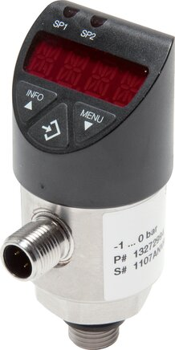

Trong các hệ thống công nghiệp nặng — trạm bơm, khí nén cao áp, thủy lực, dầu khí — việc giám sát ngưỡng áp suất và tự động đóng/ngắt thiết bị là yêu cầu bắt buộc. Công tắc áp suất điện tử (electronic pressure switch) WIKA dòng Heavy Duty làm đúng việc đó: đo áp liên tục, so với ngưỡng cài đặt và chuyển trạng thái ngõ ra số, kèm màn hình hiển thị và khả năng cài đặt bằng số thay vì vặn vít cơ khí. So với công tắc cơ truyền thống, nó cho độ tin cậy cao hơn, số lần đóng cắt lớn hơn và độ chính xác ngưỡng tốt hơn hẳn. Fast Group Engineering là đại lý cung cấp hàng chính hãng WIKA (Germany) tại Việt Nam.

Gợi ý chọn nhanh
- Cần cảnh báo hoặc điều khiển theo ngưỡng áp/lưu lượng.
- Cần cài setpoint, hysteresis hoặc tín hiệu switching.
- Cần bảo vệ máy nén, thủy lực hoặc mạch làm mát.
- Dải cài đặt, kiểu output và nguồn cấp.
- Kết nối cơ khí, kết nối điện và môi trường lắp.
- Áp/lưu lượng làm việc, chu kỳ đóng cắt và yêu cầu IP.
- Danh mục công tắc áp suất WIKA.
- Bài công tắc áp suất điện tử.
- Bài flow switch làm mát/bôi trơn.
Tóm tắt nhanh
- Công tắc điện tử = cảm biến áp + bộ so ngưỡng + output số (PNP/NPN) ± tín hiệu analog.
- Setpoint (SP): ngưỡng kích hoạt; Reset point (RP): ngưỡng nhả.
- Hysteresis = SP − RP, chống rung/nhấp nháy quanh ngưỡng.
- Dòng Heavy Duty: bền rung, chịu áp cao, số chu kỳ đóng cắt lớn.

Nguyên lý & cấu hình output
Khác với công tắc cơ dùng lò xo và tiếp điểm vật lý, công tắc điện tử dùng một cảm biến áp suất đo liên tục, đưa giá trị về bộ vi xử lý. Bộ xử lý liên tục so sánh áp thực với ngưỡng đã cài; khi vượt (hoặc tụt dưới) ngưỡng, nó chuyển trạng thái ngõ ra bán dẫn. Vì không có tiếp điểm cơ khí chịu hồ quang, tuổi thọ đóng cắt gần như không giới hạn và điểm tác động ổn định theo thời gian.
| Output | Mô tả |
|---|---|
| PNP / NPN | Ngõ ra số đóng/ngắt tải qua PLC hoặc relay |
| Analog 4–20 mA (một số bản) | Vừa switch vừa truyền giá trị đo |
| 2 x switch | Hai ngưỡng độc lập (low/high) |
Bản có cả switch và analog rất tiện: bạn vừa dùng ngõ số để đóng/ngắt bơm, vừa lấy tín hiệu 4–20 mA đưa về màn hình hoặc PLC để ghi xu hướng áp suất. Điều này giúp giảm số thiết bị phải lắp và tiết kiệm cổng ngõ vào của bộ điều khiển.
Setpoint & Hysteresis: cài thế nào?
Hai cách cài phổ biến:
- Hysteresis mode: cài SP (điểm kích) và hysteresis; RP = SP − hysteresis. Dùng cho điều khiển 2 điểm (bơm on/off).
- Window mode: output tích cực khi áp nằm trong khoảng [giới hạn dưới, trên]. Dùng để giám sát dải cho phép.
Ví dụ bơm on/off: SP = 6 bar (dừng bơm), hysteresis = 1 bar → RP = 5 bar (chạy lại). Hysteresis đủ lớn để tránh đóng cắt liên tục quanh ngưỡng.
Ví dụ cảnh báo quá áp: đặt SP = 9 bar để báo động khi áp tiến sát giới hạn thiết kế 10 bar, hysteresis nhỏ 0,3 bar để cảnh báo nhả ngay khi áp trở về vùng an toàn. Với hệ có sốc áp (van đóng nhanh, búa nước), nên tăng hysteresis hoặc bật bộ lọc/damping để tránh báo giả.
Vì sao chọn dòng Heavy Duty?
- Chịu rung động, sốc áp trong môi trường công nghiệp nặng.
- Số chu kỳ đóng cắt cao, tuổi thọ dài hơn công tắc cơ.
- Màn hình số, cài đặt chính xác bằng số thay vì vặn vít.
- Cấp bảo vệ IP cao, phù hợp ngoài trời/ẩm.
Ứng dụng thực tế theo ngành
Công tắc áp suất điện tử Heavy Duty xuất hiện ở hầu hết các hệ có bơm và khí nén. Một vài tình huống điển hình:
- Trạm bơm cấp nước / tăng áp: điều khiển bơm chạy–dừng theo áp đường ống, thay rơ-le áp cơ hay hỏng và trôi điểm.
- Máy nén khí & hệ khí nén: giám sát áp bình chứa, bảo vệ quá áp, khởi động/dừng máy nén.
- Thủy lực máy công cụ: phát hiện tụt áp để dừng chu trình an toàn, bảo vệ bơm và xy-lanh.
- Dầu khí & hóa chất: giám sát áp bơm, cảnh báo tắc lọc; bản có chứng nhận Ex khi lắp trong vùng nguy hiểm.
Công tắc điện tử vs contact gauge vs công tắc cơ
| Tiêu chí | Điện tử Heavy Duty | Contact gauge | Công tắc cơ |
|---|---|---|---|
| Độ chính xác ngưỡng | Cao (cài số) | Trung bình | Trung bình |
| Hiển thị | Màn hình số | Kim + tiếp điểm | Không/ít |
| Tín hiệu | PNP/NPN, analog | Tiếp điểm | Tiếp điểm |
| Số chu kỳ | Rất cao | Hạn chế | Hạn chế |
| Chi phí | Cao hơn | Trung bình | Thấp |
Nói ngắn gọn: nếu chỉ cần một điểm ngưỡng đơn giản, ít đóng cắt và ngân sách hạn chế, công tắc cơ vẫn đủ. Nhưng khi cần điểm tác động chính xác, đóng cắt nhiều, đọc được giá trị áp và tích hợp PLC, công tắc điện tử Heavy Duty là lựa chọn bền và tiết kiệm hơn về lâu dài.
Lắp đặt & đấu nối — vài lưu ý
Đấu nối điện thường qua đầu cắm M12 4 chân, nguồn 24 VDC. Cần xác định output là PNP hay NPN cho khớp với ngõ vào PLC (đa số PLC châu Âu dùng PNP). Về cơ khí, lắp cảm biến ở vị trí ít rung nhất có thể; nếu môi chất nóng, dùng ống siphon hoặc để nguội đường trích áp để bảo vệ cảm biến. Với môi chất bẩn hoặc dễ đóng cặn, ưu tiên bản màng phẳng (flush) để tránh nghẹt lỗ trích áp.
Sai lầm thường gặp khi chọn & dùng
- Đặt hysteresis quá nhỏ: ngõ ra nhấp nháy quanh ngưỡng, bơm đóng cắt liên tục gây mòn và nhảy aptomat.
- Chọn nhầm PNP/NPN: tín hiệu không được PLC nhận đúng, tưởng hỏng thiết bị.
- Bỏ qua đỉnh áp (peak): chọn dải đo sát áp làm việc, khi có sốc áp vượt thang gây sai số hoặc hỏng cảm biến — nên chừa dự phòng thang đo.
- Đóng trực tiếp tải lớn: output số chỉ để báo hiệu; đóng tải công suất phải qua relay/contactor trung gian.
- Vật liệu wetted không hợp môi chất: dẫn tới ăn mòn màng đo; luôn kiểm tra tương thích trước khi đặt hàng.
Cách chọn (Checklist)
- [ ] Dải đo & áp làm việc.
- [ ] Loại output: PNP/NPN, số lượng switch, có analog không.
- [ ] Kết nối process (G¼, G½, NPT) & kết nối điện (đầu cắm M12...).
- [ ] Nguồn cấp (thường 24 VDC) & IP rating.
- [ ] Vật liệu wetted theo môi chất.
- [ ] Yêu cầu Ex nếu khu vực nguy hiểm.
Câu hỏi thường gặp
Hysteresis nên đặt bao nhiêu?
Đủ lớn để tránh nhấp nháy quanh ngưỡng, nhưng không quá rộng làm trễ điều khiển. Với bơm nước thường 5–15% dải làm việc; hệ có sốc áp thì tăng thêm.
Có thay được công tắc cơ cũ không?
Được. Kiểm tra ren kết nối process, nguồn cấp và loại tín hiệu output tương thích PLC/relay là chuyển đổi được.
Đóng trực tiếp tải lớn được không?
Không nên. Output số phù hợp truyền tín hiệu; đóng tải công suất lớn phải qua relay hoặc contactor.
Lắp ở khu vực có nguy cơ cháy nổ được không?
Được, nếu chọn bản có chứng nhận Ex phù hợp phân vùng; hãy nêu yêu cầu này ngay trong RFQ.
Cần tư vấn hoặc báo giá pressure switch WIKA?
Gửi dải đo, output, kết nối, nguồn cấp để nhận báo giá trong 24h.
- Email: minhduc@fastgroup.vn · Zalo: (+84) 938 888 958
Fast Group Engineering – đại lý cung cấp hàng chính hãng WIKA (Germany) tại Việt Nam.
Bài liên quan: [Cảm biến áp suất WIKA 4–20 mA] · [Contact pressure gauge] · [Flow switch Heavy Duty] · [Bộ hiển thị 4–20 mA gắn tủ]